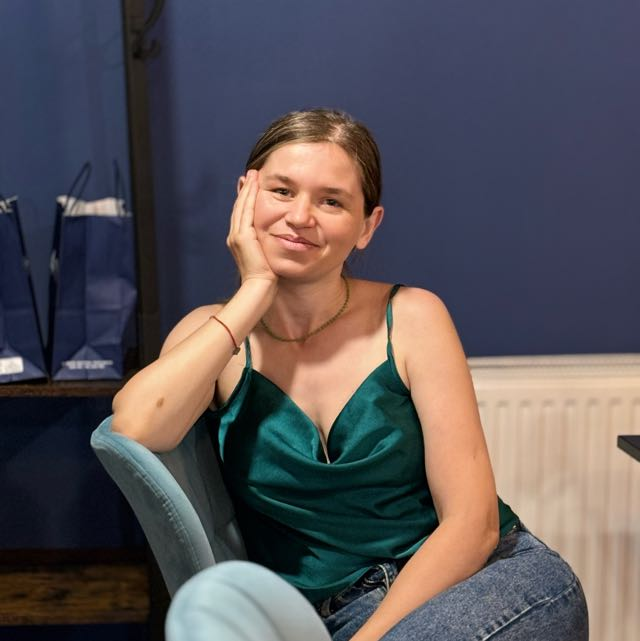

Elena Andrei — Psihoterapeut
Sunt o persoană empatică, caldă și non-intruzivă. În practica mea de psihoterapeut, respect ritmul și unicitatea fiecărei persoane. Acord o importanță deosebită formării profesionale continue și procesului de dezvoltare personală. Cred că psihoterapia facilitează schimbarea și creșterea personală atunci când sunt susținute de angajament, consecvență și de construirea unei relații terapeutice autentice și sigure.
Servicii
Ofer sesiuni de psihoterapie individuală și terapie de cuplu, lucrând teme relaționale complexe, incluind dinamici cu copiii și familia extinsă. Am experiență cu adolescenți care se confruntă cu gânduri autodistructive și cupluri în criză (inclusiv adulter). Sprijin familiile în tranziții și în gestionarea simptomelor copiilor.
Experiență
Educație și formare
Contact
Adresă: Imparatul Traian nr 9, bl B9, sc 2, ap
71, Sector 4, București
Telefon: 0730 183 282
Email:
elena.andrei@deschidemlumea.ro